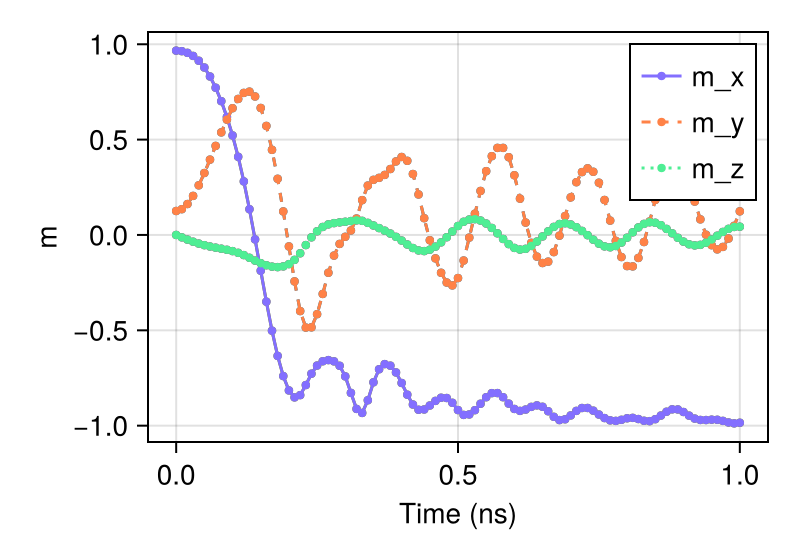

Standard Problem 4
Simulate the standard problem 4 using sim_with
A Julia package for classical spin dynamics and micromagnetic simulations with GPU support.
using MicroMagnetic
using CairoMakie
@using_gpu() # Import available GPU packages such as CUDA, AMDGPU, oneAPI, or Metal
mesh = FDMesh(; nx=200, ny=50, nz=1, dx=2.5e-9, dy=2.5e-9, dz=3e-9); # Define the discretization
sim = Sim(mesh; driver="SD", name="std4") #Create a simulation instance
set_Ms(sim, 8e5) # Set saturation magnetization
add_exch(sim, 1.3e-11) # Add exchange interaction
add_demag(sim) # Add demagnetization
init_m0(sim, (1, 0.25, 0.1)) # Initialize magnetization
relax(sim; stopping_dmdt=0.01) # Stage 1 : relax the system to obtain the "S" state
set_driver(sim; driver="LLG", alpha=0.02, gamma=2.211e5)
add_zeeman(sim, (-24.6mT, 4.3mT, 0)) # Stage 2: Apply external magnetic field
run_sim(sim; steps=100, dt=1e-11, save_m_every=1) # Run the simulation for 100 steps
ovf2movie("std4_LLG"; output="std4.gif", component='x'); # Generate a movie